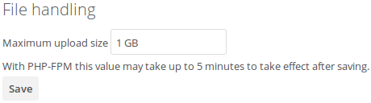

Uploading big files > 512MB¶
The default maximum file size for uploads, in ownCloud, is 512MB. You can increase this limit up to the maximum file size which your filesystem, operating system, or other software allows, for example:
- < 2GB on a 32Bit OS-architecture
- < 2GB with IE6 - IE8
- < 4GB with IE9 - IE11
64-bit filesystems have much higher limits. Please consult the documentation for your filesystem.
Note
The ownCloud sync client itself however is able to upload files of any size, as it uploads files by transmitting them in small chunks. But, it can never exceed the maximum file size limits of the remote host.
System Configuration¶
- Make sure that the latest version of PHP (at least 5.6) is installed
- Disable user quotas, which makes them unlimited
- Your temp file or partition has to be big enough to hold multiple parallel uploads from multiple users; e.g. if the max upload size is 10GB and the average number of users uploading at the same time is 100: temp space has to hold at least 10x100 GB
Configuring Your Web server¶
Note
ownCloud comes with its own owncloud/.htaccess file. Because php-fpm
can’t read PHP settings in .htaccess these settings must be set in the
owncloud/.user.ini file.
Set the following two parameters inside the corresponding php.ini file (see the Loaded Configuration File section of PHP Version and Information to find your relevant php.ini files)
php_value upload_max_filesize = 16G
php_value post_max_size = 16G
Adjust these values for your needs. If you see PHP timeouts in your logfiles, increase the timeout values, which are in seconds:
php_value max_input_time 3600
php_value max_execution_time 3600
The mod_reqtimeout
Apache module could also stop large uploads from completing. If you’re using this
module and getting failed uploads of large files either disable it in your Apache
config or raise the configured RequestReadTimeout timeouts.
There are also several other configuration options in your Web server config which could prevent the upload of larger files. Please see the manual of your Web server for how to configure those values correctly:
Apache with mod_fcgid¶
Note
If you are using Apache/2.4 with mod_fcgid, as of February/March 2016,
FcgidMaxRequestInMem still needs to be significantly increased from its default value
to avoid the occurence of segmentation faults when uploading big files. This is not a regular
setting but serves as a workaround for Apache with mod_fcgid bug #51747.
Setting FcgidMaxRequestInMem significantly higher than normal may no longer be
necessary, once bug #51747 is fixed.
NGINX¶
Since NGINX 1.7.11 a new config option fastcgi_request_buffering
is availabe. Setting this option to fastcgi_request_buffering off; in your NGINX config
might help with timeouts during the upload. Furthermore it helps if you’re running out of
disc space on the /tmp partition of your system.
For more info how to configure NGINX to raise the upload limits see also this wiki entry.
Note
Make sure that client_body_temp_path points to a partition with
adequate space for your upload file size, and on the same partition as
the upload_tmp_dir or tempdirectory (see below). For optimal
performance, place these on a separate hard drive that is dedicated to
swap and temp storage.
If your site is behind a NGINX frontend (for example a loadbalancer):
By default, downloads will be limited to 1GB due to proxy_buffering and proxy_max_temp_file_size on the frontend.
- If you can access the frontend’s configuration, disable proxy_buffering or increase proxy_max_temp_file_size from the default 1GB.
- If you do not have access to the frontend, set the X-Accel-Buffering header to
add_header X-Accel-Buffering no;on your backend server.
Configuring PHP¶
If you don’t want to use the ownCloud .htaccess or .user.ini file, you may
configure PHP instead. Make sure to comment out any lines .htaccess
pertaining to upload size, if you entered any.
If you are running ownCloud on a 32-bit system, any open_basedir directive
in your php.ini file needs to be commented out.
Set the following two parameters inside php.ini, using your own desired
file size values:
upload_max_filesize = 16G
post_max_size = 16G
Tell PHP which temp file you want it to use:
upload_tmp_dir = /var/big_temp_file/
Output Buffering must be turned off in .htaccess or .user.ini or php.ini, or PHP
will return memory-related errors:
output_buffering = 0
Configuring ownCloud¶
As an alternative to the upload_tmp_dir of PHP (e.g., if you don’t have access to your
php.ini) you can also configure a temporary location for uploaded files by using the
tempdirectory setting in your config.php (See Config.php Parameters).
If you have configured the session_lifetime setting in your config.php
(See Config.php Parameters) file then
make sure it is not too
low. This setting needs to be configured to at least the time (in seconds) that
the longest upload will take. If unsure remove this completely from your
configuration to reset it to the default shown in the config.sample.php.
Configuring upload limits within the GUI¶
If all prerequisites described in this documentation are in place an admin can change the
upload limits on demand by using the File handling input box within the administrative
backend of ownCloud.

Depending on your environment you might get an insufficient permissions message shown for this input box.

To be able to use this input box you need to make sure that:
- Your Web server is be able to use the
.htaccessfile shipped by ownCloud (Apache only) - The user your Web server is running as has write permissions to the files
.htaccessand.user.ini
Set Strong Directory Permissions might prevent write access to these files. As an admin you need
to decide between the ability to use the input box and a more secure ownCloud installation
where you need to manually modify the upload limits in the .htaccess and .user.ini
files described above.
General upload issues¶
Various environmental factors could cause a restriction of the upload size. Examples are:
- The
LVE ManagerofCloudLinuxwhich sets aI/O limit - Some services like
Cloudflareare also known to cause uploading issues - Upload limits enforced by proxies used by your clients
- Other webserver modules like described in General Troubleshooting